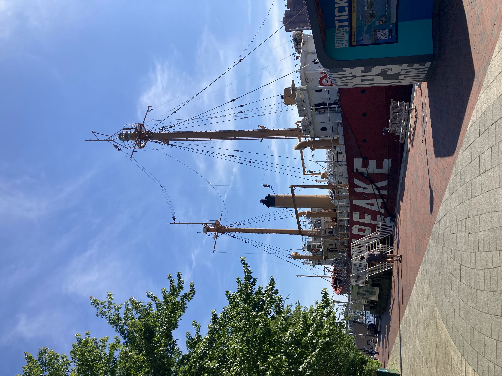

This site was created for Information Technologies (INFO-654)
I am pursuing a Masters in Library and Information Science, with a particular interest in museum collections and archives.
Before beginning at Pratt, I earned a BA in Art History and completed an internship in the collections department at the South Street Seaport Museum.
At the Seaport Museum, I was responsible for cataloging a collection of maritime postcards, including documentation and description. As part of the conclusion of my time at the Seaport Museum, I cowrote a post for their Collections Chronicles Blog titled, Missives from the Past, which details some of the work I did there. I draw on my experience at the Seaport Museum as a foundational experience contributing to why I am pursuing the work that I am.
I currently live in New York City and I'm from Baltimore, MD, another important east coast port city.